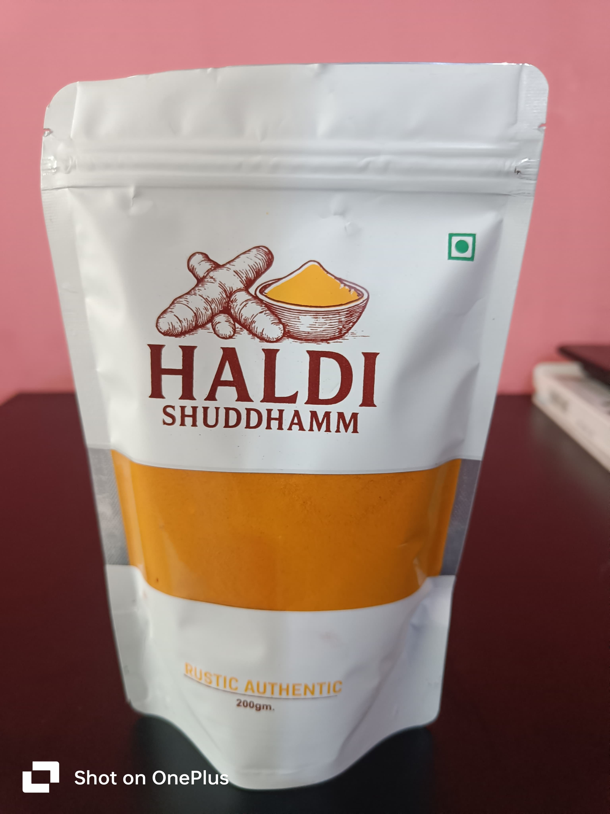
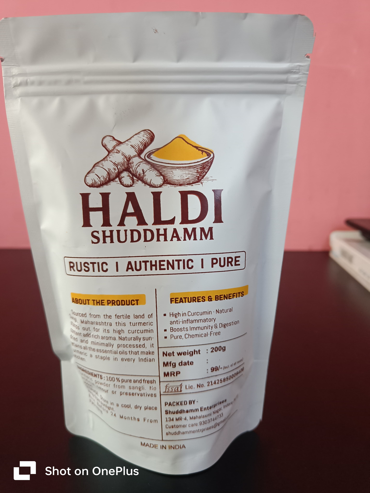

At Suddhamm Enterprises, we are passionate about bringing the purest and most natural form of eatable turmeric powder to your kitchen. Sourced from high-quality turmeric roots and processed with the utmost care, our turmeric powder is 100% food-grade, free from additives, and rich in natural curcumin. We believe in preserving the traditional value of turmeric while ensuring it meets modern standards of hygiene and safety.
Our edible turmeric powder is made from premium grade turmeric roots, carefully harvested and naturally sun-dried to preserve maximum flavor, colour, and nutritional value.Ground to a fine vibrant yellow powder, this superfood spice is perfect for cooking, health remedies ,and daily wellness

Whether you're a health enthusiast, a home cook, or a wellness brand , our turmeric powder is perfect addition to your lifestyle.
Add 1/2teaspoon to your favorite dish or beverage. For a health drink,mix with warm water, lamon,and honey- or try it wiwth black pepper and ghee for enhanced absorption.